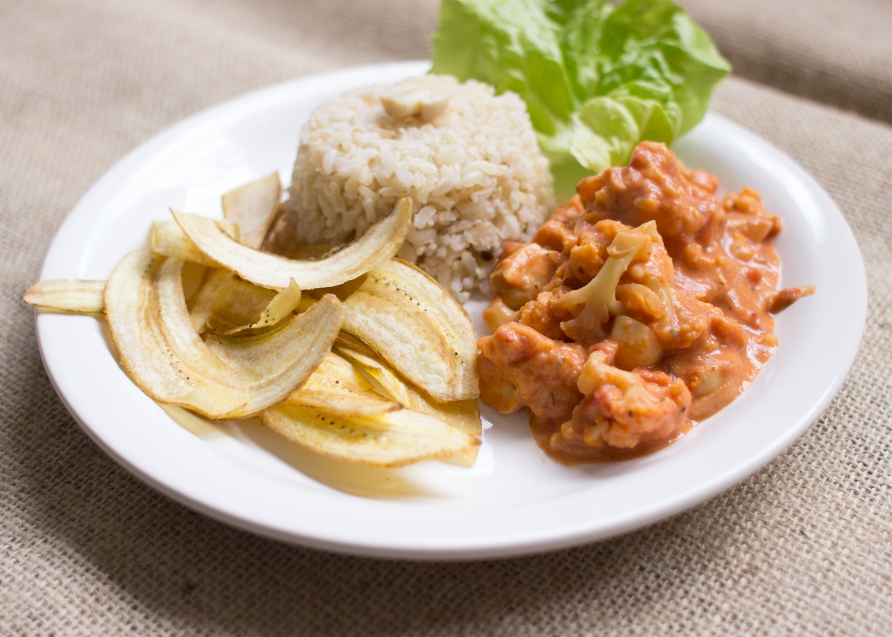

Leve e apetitosa como a vida deve ser!

Ingredientes:
- 1 xícara de aveia
- 2 xícaras de água morna
- 4 dentes de alho picado
- 1/2 cebola picada
- 300 g de palmito pupunha picado
- 100 g de cogumelos champignon fatiados
- 2 colheres (sopa) de mostarda
- 1/2 xícara de salsinha
- tomilho fresco a gosto
- alecrim fresco a gosto
- 1/2 xícara de água sal a gosto pimenta-do-reino a gosto
Todos os direitos reservados © Victor Varjão - Théo Alves - Sara Duarte